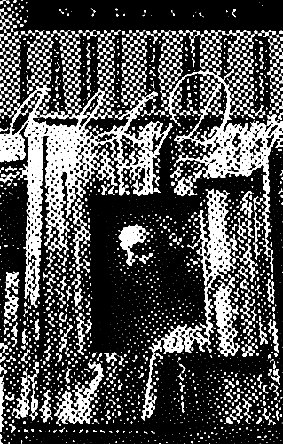

-

Story of the Eye ~ Georges Bataille
-

Geek Love ~ Katherine Dunn
I've been in quite the reading slump lately and this is what brought me out of it. Firstly, the prose was amazing. It was colorful and vulgar and strange and unrelenting. There were so many small snippets of detail that blended the mundane and extravagant. It was like a world flipped upside down, the beautiful turned taboo and the taboo turned beautiful.
The story revels in the horror and absurdity of freak shows instead of trying to rationalize it. Arty is a monstrous megalomaniac but through the eyes of Oly I found myself falling in love with him with her. Even though the setting is transient, the backwaters and metropolises of America fall away, like the family all that's worth remembering is their home, their nexus, their carnival. The great love story of the Binewskis is what takes center stage.
There's such a complicated dynamic of love and power and pity and hatred between all the members of the family, but I think the inherent absurdity of their lives as freaks made their family issues less melodramatic and more realistically painful. It felt like their fates were doomed from the start. -
Big Red Son ~ David Foster Wallace
Jan 28, 2024
This is my first DFW though of course Infinite Jest has been on my to-read purely to sate the redditor gremlin on my shoulder. I deeply envious of writers like him, ear-to-the-ground and deeply immersed and connected to the thrumming heart of Us and so so witty. I have a running list of essayists in my head whose eyes I want to steal; I want to live in their brains like a fly.
There's this general awe mixed with trepidation imbued in the culture of the 90s to the early aughts (I wasn't even cognizant then so I'm gleaning this from whatever media has crossed over the barrier of time to me). It's the dawn of the millennia and every thing is shiny and chrome but it's sullied by the big FEAR - fear of the machine, fear of ourselves, fear of what we've done to each other. It's like everyone is standing agape at this rogue wave hoping it doesn't come crashing down on them.
I think DFW would be satisfied/horrified to find how prescient his piece is. Let's see: Celebrity culture? Check. Increasing commodification of women? Check. Spiraling descent into filth and abasement? Check. He couldn't have predicted the horror that is AI and deepfake though - or those insane Terminator fleshlights. And I'm glad to report he was wrong about snuff going mainstream. -
Thomas McKeller was singular among Sargent’s pantheon of models
Dec 11, 2023
Came across these beautiful watercolors of a black man and saw the artist was John Singer Sargent and I was like ??wahhh?? Turns out the story behind Sargent and this muse contains complicated intersections of race, class, sexuality, and artistry - very juicy stuff.
-
Mania in the Era of Romanticism
Nov 14, 2023
How far back does this macabre spectacle go? Did early humans revel in watching a saber tooth tiger down a mammoth? I think they did. Life is more interesting on the edge - or in this case viewing life from the edge is more interesting. Also I just love how comically dramatic the Victorians were. Any hint of the gothic and they’re there.
-

The Buried Giant ~ Kazuo Ishiguro
Nov 14, 2023
I was scared of returning to Kazuo Ishiguro because of how badly disappointed I was in Never Let Me Go. But The Buried Giant was a novel I unexpectedly loved. 1. Because of my aforementioned experience 2. Because its a very capital E English fantasy. I don't even remember the last time I read a typical fantasy novel and with the dystopian I just read it seems like I'm on a genre tour. Maybe I'll read a pulp western next to round everything out.
The Buried Giant doesn't seem like a typical fantasy to me though. The tone of it reminds me of magical realism works in that the fantastical elements read as so prosaic (it helps that I know next to nothing about Arthurian England) that I can fully believe back then ogres and pixies and dragons really did live amongst people.
As for the setting and dialogue it took very little time to get immersed in both. I love a good craggy outlook and rolling hillside. The dialogue reminded me a bit of Shakespeare? In that kind of overexplaining quaint way his characters speak. Like a cross between Shakespeare and fairytale. I loved the dialogue actually.
The cast was similar to Piranesi in a way. They're one-dimensional like characters from a fairytale. And therefore very pure and guileless. This pastoral background combined with these kind and noble characters made it all the more shocking when scenes of violence and cruelty happen. At first it was laced in but as the plot started materializing it became central to the story. Absolutely heartbroken by Axl and Beatrice. Good simple characters with a lived in love. Their devotion to each other... I did cry at the end. Actually I was on the verge of tears for the last few chapters.
This book restored my faith in Ishiguro. The way the plot threads weaved together in the end was so graceful and just so well put together. And his message of war and forgiveness and revenge and death was so poignant... There was no villian in this story. It pulling between people trying to cope with their loyalty and anger and loss.
Sidenote: the warrior took on this really erotic image in my head so I was getting distracted every time he showed up... -

Folding Beijing ~ Hao Jingfang
Nov 13, 2023
I think this was the first thing in my reading list when I got my first phone. It’s a straightforward story about class inequality told through a dystopian setting (what’s new). I love the premise, the Inception-like contortion of the city is such an awesome, impossible image. And I tend to like these papery main characters like Lao Dao - ones that aren’t fighting to move the plot along but are instead conduits used to feel out the world. These kinds of characters are rare in American lit, which says a lot about our societal ideals lmao.
-

The Library of Babel ~ Jorge Luis Borges
Nov 11, 2023
A continuation of my infinite space readings. This is my first Borges and tbh at times I found the text near inscrutable. The main gist is clear, though I don’t follow the logic in the narrator’s thinking that the library is infinite therefore periodic. I enjoyed the cult-ish parts the most. It’s so pathetic yet noble of humans to devote their lives to a pursuit so impossible. I may get to the rest of Ficciones after my next read.
-

Piranesi ~ Susanna Clarke
Nov 10, 2023
Incredibly stunning book. I wanted to read it all in one sitting but I didn't want it to end so soon. But I think the short length was perfect. There's enough time to sit and stew in the world-building but the plot moves fast enough to always keep the reader unmoored.
Firstly the setting: on a sliding scale for books about infinite homes Piranesi and House of Leaves are on complete opposite ends (I've been wanting to reread HoL but I don't remember where the fuck I put my copy -_-). The House in Piranesi is so beautiful because of its contradictions: the austerity and nobility of the statues that are eroded by the tides and desecrated by birds, the vast and looming power of the waves and clouds that are contained within mere halls and windows. It's an almost disconcerting blend of nature and architecture - the flowing and the rigid. (Unstoppable force vs immovable object anyone?) But the narrator has such a reverence for the House it's impossible not to also be in awe.
I think this is one of my favorite narrators of all time. He has such a genuine, innocent way of seeing the world it almost made me cry. His monologue was so endearing in the sincerity of his thoughts and the pure wonder and respect he held his world in. When he was at the fawn statue and believed it was saying "Hush! Be comforted!" to him my heart broke. And the way he described putting pretty shells and bones in his hair was so!!!!!
Awhile ago when I was reading about Hegel, one intro to an essay emphasized that in ancient times thinking and philosophy was centered on how man fits into the universe. Actually how everything is slotted together. And as we've moved into modern times the thinking has gone to (strayed to?) man as the individual; he is a universe in and of himself. These historical shifts in thinking play a large part in the narrator's journey. In the House he is amongst endless nature and literal classical marble statues, he is entwined with the world and believes that as he cares for it, it cares for him - man and universe working in harmony.
"the Beauty of the House is immeasurable; its kindness infinite" -

As I Lay Dying ~ William Faulkner
Oct 10, 2023
Wow... Ok for context my americana obsession would inevitably go down that sprawling road towards Faulkner. It’s just a shame it took this long. From the opening the book is imbued with dread. It gave me the same feeling as reading And Then There Were None – the anticipation of watching everyone drop like flies. I can definitely see how Cormac McCarthy was influenced by Faulkner – obviously genre-wise but also a style of writing I describe as fill in the gap. Like describing events and scenes through snapshots and feelings rather than linearly. Leaves lots of room in between which gets very confusing and abstract and so fun to read.
The style leans especially well to action, particularly the scene where Jewel is mounting his horse: it’s as if you’re supposed to read through the passage quickly and not linger on details to really /feel/ the movement, like stepping back from a Pollock.
And the voices, god so strange and spiraling and serpentine but not pushed too hard to caricature. A lot of the times reading this book it’s like my senses know what’s going on before my mind. Which ig is one of the boons of stream of consciousness. And it was fun to interpret how everyone grieved thru the lens of like 10 other people. I could go on about the themes but I can’t put my thoughts into words rn.